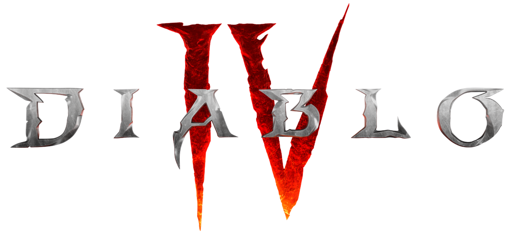

Saiba Mais

Em Diablo 4, o mundo de Santuário está à beira da destruição. Após anos de caos e guerras entre demônios e anjos, uma nova e sombria ameaça emerge: Lilith, filha de Mefisto e considerada a "Mãe da Humanidade". Seu retorno ao mundo dos vivos não é apenas um ato de vingança, mas uma tentativa de moldar a humanidade à sua própria visão de poder e domínio. Ela busca corromper corações e almas, espalhando medo, trevas e caos por todos os cantos de Santuário.
O jogador se encontra imerso em uma terra devastada, onde antigas cidades estão em ruínas, florestas sombrias escondem monstros primordiais, e pântanos traiçoeiros abrigam cultos obscuros dedicados a forças malignas. Cada região de Santuário conta sua própria história de tragédias e lendas esquecidas, revelando a extensão do conflito entre Céu e Inferno.
Ao longo da jornada, o herói enfrentará cultos sanguinários, criaturas demoníacas, traidores disfarçados e forças sobrenaturais que testam a coragem e a habilidade do jogador. Os eventos do mundo reagem às ações do jogador, criando experiências dinâmicas e imprevisíveis.
Além do combate e exploração, o jogador descobrirá os segredos de Santuário: antigas profecias, artefatos de poder e a verdadeira origem da humanidade. Cada descoberta adiciona camadas à narrativa, tornando o confronto final não apenas uma batalha física, mas também um teste moral e espiritual. A luta culmina em um embate apocalíptico contra Lilith e seus seguidores, onde decisões estratégicas e habilidades adquiridas ao longo da aventura determinarão o destino do mundo.
Santuário é um lugar de beleza sombria e horror fascinante; uma terra onde esperança e desespero coexistem, e cada passo do jogador molda o futuro de toda a humanidade. Em Diablo 4, a escuridão não é apenas um inimigo, mas uma força viva que desafia heróis a provar seu valor e sobreviver ao caos que assola o mundo.

Força bruta e habilidades de combate corpo a corpo.

Controle dos elementos e magias devastadoras.

Transformação em animais e manipulação da natureza.
Agilidade, furtividade e ataques precisos.

Comando sobre os mortos e magias sombrias.